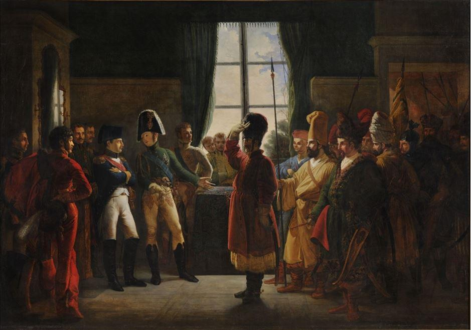
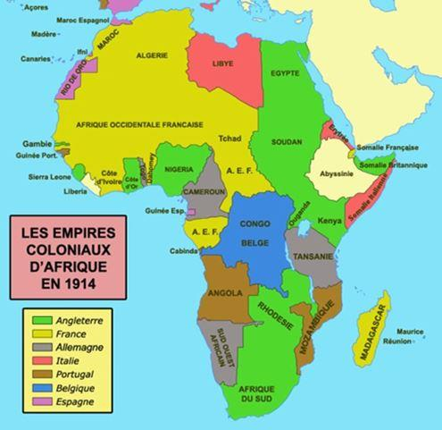

Dans son article intitulé « A la recherche du temps perdu », madame Galactéros, présidente de GeoPragma, se désole à raison de la perte d’influence de la France dans les affaires mondiales, et constate amèrement que « nous ne comptons plus ». Elle qualifie nos interventions en Libye et en Syrie de « suivisme suicidaire », porteur d’une décrédibilisation de notre politique extérieure. Son analyse est tout à fait pertinente. Mais de quelle latitude dispose la France dans la définition de sa « démarche stratégique » ?
L’enfermement
La France n’est plus le centre du monde, comme elle le fut au temps de Louis XIV. Le monde dans lequel nous vivons a été façonné au cours des deux derniers siècles par les Anglo-Saxons.

Alexandre Ier présente à Napoléon les Kalmoucks, les Cosaques et les Baskirs de l'armée russe (9 juillet 1807) - Bergeret.
Aux lendemains de la Seconde Guerre mondiale, les Britanniques passèrent le flambeau aux Américains – à leur corps défendant. Les États-Unis créèrent trois institutions : l’Organisation des nations unies, le Fonds monétaire international et la Banque mondiale. Ils y ajoutèrent l’Accord général sur les tarifs douaniers et le commerce en 1947, et l’Organisation du traité de l’Atlantique nord en 1949, plus connu sous son acronyme Otan.
Enfermée dans ce carcan, la France jouit d’une liberté limitée pour définir sa politique étrangère, comme nous le vîmes en 1956 quand le président Eisenhower mit fin à l’expédition de Suez, en 1982 quand l’Argentine ne put utiliser ses missiles Exocet, ou en 2013 quand la France dut renoncer à la vente de Mistral à la Russie. Ajoutons, pour faire bonne mesure, l’inique emprisonnement de Frédéric Pierucci dans une prison de haute sécurité aux États-Unis pendant plus de deux ans pour faire main basse sur la branche énergie d’Alstom.
Avec de tels amis, nul besoin d’ennemis.
L’Union soviétique s’étant enfermé à l’intérieur de sa sphère d’influence après la Seconde Guerre mondiale, le monde se divisa en deux grands blocs, puis en trois quand les pays non-alignés se trouvèrent à Bandung pour marquer leur différence. Le démembrement de l’Union soviétique en décembre 1991 fut interprétée comme une victoire de l’Occident. Les États-Unis y virent l’occasion de réaffirmer leur volonté hégémonique. Ils le firent dans un document – le Défense Planning Guidance – qui choqua le monde à sa publication en février 1992 par le New York Times. Forts de leur position dominante, les États-Unis remplacèrent l’Accord général sur les tarifs douaniers par l’Organisation mondiale du commerce en janvier 1995 pour affermir leur contrôle sur le monde par le commerce. Mal leur en a pris.
La Chine en est la grande gagnante, en se soustrayant à certaines de ses contraintes, quand elle n’en flouait pas carrément d’autres. Elle est aujourd’hui « la » concurrente de l’Empire américain. Les grands gagnants sont aussi les entreprises transnationales dont les dirigeants et actionnaires s’imaginent volontiers en gouvernants du monde (Bilderberg Group, Commission trilatérale, Forum économique mondial, etc.). Prise dans ce maelstrom politico-militaro-économique, la liberté d’action de la France est limitée. George W. Bush a été très clair : « vous êtes avec nous, ou vous êtes contre nous » ! Ce message ne se limite pas à l’Iraq ou à la guerre contre le terrorisme.
Comme le note madame Galactéros, notre appartenance au monde anglo-saxon nous conduit à la désastreuse et injustifiable attaque de la Libye qui n’est pas, comme se plaisent à le rappeler les médias français, une initiative franco-britannique mais la réponse française (et britannique) à une injonction américaine. Nul n’en doute à Washington. Il en va de même de nos attaques sur la Syrie – tout aussi condamnables. En bref, nous sommes les serviteurs d’un système qui ne sert pas nécessairement les intérêts de la France.
Notre enfermement prit une coloration européenne avec la signature le 18 avril 1951du traité de Paris qui créait la Communauté européenne du charbon et de l’acier, ancêtre de l’Union européenne. Il s’agit d’une initiative américaine, même si l’on s’évertue à y chercher des racines françaises en remontant à Aristide Briand, voire à Victor Hugo pour justifier notre engagement européen. Aveuglée par cet engagement qui tient plus de la foi que de la raison, la classe politique française qui comprend peu de chose à l’économie, fit un pas de plus vers l’embrigadement de la France avec l’instauration de l’euro – un Deutsche mark dévalué, cadeau à la politique mercantile de l’Allemagne qui n’hésite pas à s’en servir pour imposer sa politique économique – politique désastreuse pour notre industrie.
Quelle démarche stratégique ?
Dans ce double enfermement américano-européen, il est difficile d’imaginer une politique extérieure propre, d’autant que face aux deux géants que sont les États-Unis et la Chine, la France – disons-le brutalement – ne fait pas le poids. Sa population est le cinquième de celle des États-Unis et le vingtième de celle de la Chine. Son produit intérieur brut est égal à un peu plus de 10 % du produit américain et un peu moins de 20 % du produit chinois. Son budget défense s’élève à 7 % du budget américain et 20 % du budget chinois. Il lui faut donc compenser cette infériorité par des alliances, comme elle le fit jadis. Face à une Grande-Bretagne inféodée à l’Amérique, l’allié naturel ne peut être que l’Allemagne. C’était l’objet du traité de l’Elysée de 1963 que le Bundestag s’empressa de vider de sa substance en y ajoutant un préambule. L’Allemagne joue son propre jeu. Elle s’en remet à Washington pour sa défense, et lorgne du côté de Moscou et de Pékin pour son économie. Il n’y a donc peu d’espoir de ce côté-ci. Reste la Russie… mais ce serait changer de camp. Cela n’est pas possible. La France est donc seule dans sa politique d’indépendance – une politique dont elle n’a pas les moyens.
En effet, la France souffre d’un mal récurrent que taisent les livres d’histoire. Depuis Philippe le Bel, elle n’a jamais maîtrisé ses finances (à l’opposé de notre meilleure ennemi – la Grande-Bretagne, tout au moins jusqu’en 1914). Un roi de France dut déroger pour renflouer les caisses de l’état en épousant une riche héritière de Florence1.Or, il ne peut y avoir de bonne politique sans bonne finances, comme aimait le rappeler le duc de Sully à son maître dépensier. Un demi-siècle plus tard, un autre grand serviteur de l’état donna ce même conseil au Roi Soleil sans grand succès. Le siècle qui suivit fut celui de l’affaissement de la France. Il débuta avec la désastreuse guerre de Sept ans et se conclut par la défaite de Waterloo. Les Anglais l’appellent « La Seconde Guerre de Cent Ans » !...
Nous perdîmes notre premier empire colonial qui comprenait une partie du Canada, des États-Unis et de l’Inde. La France s’efforça d’en reconstituer un autre. Les Anglais ayant pris les meilleurs morceaux, nous prîmes les restes. C’est le cas de l’Afrique. Les Anglais ayant conquis l’est et le Nil, le sud et ses mines de diamant, nous nous contentâmes d’un ouest sans grand intérêt économique.
A ce tableau peu brillant, il faut ajouter la désastreuse défaite de Sedan, la Première Guerre mondiale que nous gagnâmes grâce à nos alliés, et l’effondrement de 1940 que nous sublimons en évoquant la mémoire de De Gaulle, de la résistance et des forces françaises libres. Mais, les faits sont là, et aux yeux du monde, ils confèrent à la France une image brouillée.
Comptes nationaux (rappel) : le dernier budget excédentaire de la France remonte à 1974, et la dernière balance commerciale excédentaire à 2002. Les déficits budgétaires et commerciaux augmentent la dette nationale qui est désormais égale au produit intérieur brut (avant impact du Covid-19) alors qu’elle ne s’élevait qu’à 20% du même produit en 1980. Autre statistique : la dette française qui était égale à la dette allemande en 1995 (en pourcentage du produit intérieur brut), est aujourd’hui plus de deux fois supérieure à celle-ci. La France a dévalué dix fois le franc depuis 1945…
Au bout du compte, l’histoire nous place dans le camp anglo-saxon. La conquête normande qui se transforma par un revers de l’histoire en quasi conquête du royaume de France, fascine toujours les esprits en Angleterre. Richard Cœur de Lion qui ne parlait pas anglais et fut enterré à l’abbaye de Fontevraud, a sa statue à Londres. Les Américains cultivés n’ignorent pas que sans Vergennes, Rochambeau et de Grasse, les États-Unis ne seraient pas aujourd’hui. Le socle sur lequel repose la statue de la Liberté fut financé par une souscription publique à l’initiative de Joseph Pulitzer, magnat de la presse. Nous partageons le même amour de la liberté. Les similitudes s’arrêtent là. Le monde anglo-saxon est celui du commerce et de la finance – en un mot, de l’avidité.
Alexis de Tocqueville le déclare sans ambages lorsqu’il écrit : « … je ne connais pas de pays où l’amour de l’argent tienne une plus large place dans le cœur de l’homme… ». Le nôtre est celui de la culture et des arts, à l’image de nos maîtres : les Italiens. Nous appartenons donc à ce monde anglo-saxon qui nous impose sa vision du monde et nous détruit de l’intérieur. Nous n’avons ni les moyens, ni la volonté (en raison des sacrifices qu’imposeraient une politique d’indépendance) de nous libérer. Dès lors, quelle démarche stratégique ?
J-L. B.
NOTE
1. Marie de Médicis était liée aux Habsbourg par la cuisse gauche.
Partager cette page